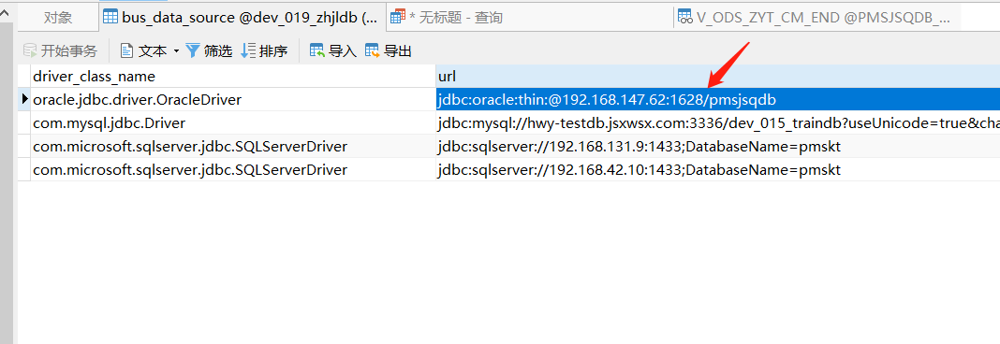
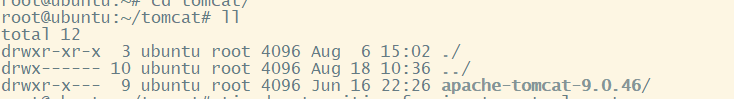

监听程序当前无法识别连接描述符中所给出的SID
ORA-12505, TNS:listener does not currently know of SID given in connect descriptor //说明给到的sid有误,很有可就是服务名和sid混淆使用。

首先了解数据库url的写法有两种
1 | //监听sid服务，表示sid为orcl |
第一种是监听sid服务，第二种则是监听服务名
所以发现是自己的sid写错导致出现这个错误，把服务名当做了sid
把orcl的 “ : ” 改为 “ / ” 访问正常
清除表内数据 （truncate table）时，存在外键约束 无法操作数据
SET FOREIGN_KEY_CHECKS=0; #禁用外键
TRUNCATE TABLE tableName; #清空表
SET FOREIGN_KEY_CHECKS=1; #启用外键
sql 总结
– 这段sql 使用exists ,exists的条件类似bool ，能返回结果集则true，不能返回结果集则返回false
exists 与 in 最大的区别在于 in一定是外层条件比in 条件覆盖范围大
SELECT
a.user_id,
a.longitude,
a.latitude,
a.create_date,
su.NAME,
su.login_name
FROM
zhjl_user_track a
LEFT JOIN sys_user su ON su.id = a.user_id
WHERE
NOT EXISTS (
SELECT
1
FROM
zhjl_user_track b
WHERE
a.user_id = b.user_id
AND b.create_date > a.create_date)
- 以下这段SQL使用 inner join \ 分组、聚合函数
inner join 本质上就是两个表的交集、分组使用聚合函数用以取出最大时间的人
SELECT a.user_id AS userId, a.longitude, a.latitude, a.create_date AS createDate, su.name, su.login_name FROM zhjl_user_track a
INNER JOIN
(SELECT a.user_id AS userId, a.create_dateFROM zhjl_user_track a GROUP BY a.user_id HAVING a.create_date=MAX(a.create_date)) t
ON a.user_id=t.userId AND a.create_date=t.create_date
INNER JOIN sys_user su ON su.id = a.user_id
WHERE a.create_date>=’2021-02-01 0:00:00’
LIMIT 100
使用$.post（jquery 的 post 方法）入库一个字段后，紧接的查询 却没能查到这条记录
1 | $.post() 和 $.get() 默认是 异步请求 |
异步
当一个异步请求发送时，浏览器不会处于锁死、等待的状态，一个异步请求从发送到获取响应的期间，浏览器还可以执行其他操作，这就是异步请求。
使用补码的目的
使用补码的目的是省去计算中判断符号的麻烦，不论正数还是负数都统一做加法计算；
最高位为0是正数、最高位为1是负数
原码：10000001 （-1） 00000011 （3）
正数的补码为其本身；负数的补码：符号位不变、其他位取反、而后加1
补码：11111111 00000011
结果：00000010 （2）
int(1) 与int (11) 的区别 –mysql中int 长度
理论上int 长度是为 4个byte 范围在 -2^31~2^31-1
int 字符长度不管是设置为1 还是11 都是 4个byte ，最大值为20多亿，宽度只是在设置zerofill 后在长度不及时填充零
当整数类型int 不够存 应设置为bigint 而不应该去继续扩大int的长度
这次遇到的exception为 out of range for value column ‘office_id’
linux文件属主与属组

从左至右第一个字符代表文件类型
• 当为[ d ]则是目录
• 当为[ - ]则是文件；
• 若是[ l ]则表示为链接文档(link file)；
• 若是[ b ]则表示为装置文件里面的可供储存的接口设备(可随机存取装置)；
• 若是[ c ]则表示为装置文件里面的串行端口设备，例如键盘、鼠标(一次性读取装置)。
chown [–R] 属主名 文件名
chown [-R] 属主名：属组名 文件名
创建用户
useradd -m changfeng -d /home/changfeng -s /bin/bash